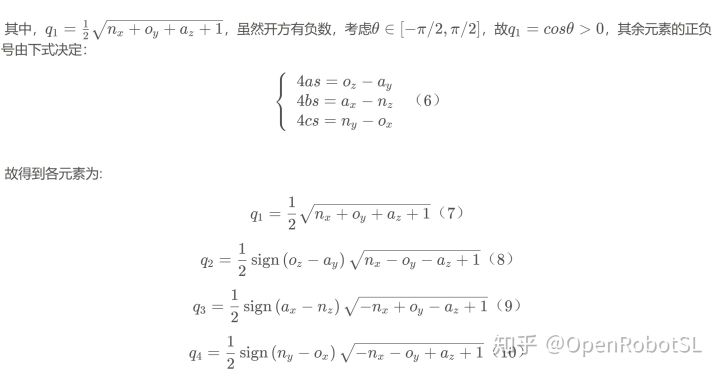

Home
在我前面的博文基于抛物线过渡（梯形加减速）的空间直线插补算法与空间圆弧插补算法、五自由度diy机械臂空间插补算法(直线和圆弧)简单测试中出现姿态奇异性问题，这主要是由于我选用的RPY角姿态表达方法在β角等于±90°时姿态解算会出现奇异现象，剩下两个自由度会退化，α角和γ角会变成一个角。为解决这个问题，我换用单位四元数来对姿态进行表达。
结果显示能够解决奇异性问题：
机器人姿态表达
机器人姿态表达形式主要有旋转矩阵法、欧拉角法、RPY角法、单位四元数法等。
旋转矩阵法可以通过累乘表示坐标系的连续变化，能够清晰地表示当前坐标系相对于基座标系的姿态，是常用的姿态表达方式。但是由于旋转矩阵法需要9个元素才能描述姿态，在程序处理中需要使用大量内存空间且计算复杂，所以旋转矩阵法不适合应用与实时性较高的姿态控制和运动插补控制中。
欧拉角法和RPY角法都能非常简单地描述物体姿态。机器人末端执行器的示教姿态通常以欧拉角的形式给出，RPY通常表示船舶在航行中的姿态变化，都存在奇异性问题。
单位四元数在表达姿态时具有运算量小、便于插值等优势，而且单位四元数插补得到的中间姿态要比欧拉角法表示刚体旋转更为自然，同样的姿态变换下，欧拉角的姿态变化幅度大，因此单位四元数法要比欧拉法更加适合描述刚体姿态的变换。
预备知识
关于四元数的定义以及基本知识，阅读下面著作即可：

.....
% 计算两个四元数之间的夹角
dot_q = Qs.s*Qd.s + Qs.v(1)*Qd.v(1) + Qs.v(2)*Qd.v(2) + Qs.v(3)*Qd.v(3);
if (dot_q < 0)
dot_q = -dot_q;
end
for i = 1: N
% 位置插补
x(i) = x1 + delta_x*lambda(i);
y(i) = y1 + delta_y*lambda(i);
z(i) = z1 + delta_z*lambda(i);
% 单位四元数球面线性姿态插补
% 插值点四元数
if (dot_q > 0.9995)
k0 = 1-lambda(i);
k1 = lambda(i);
else
sin_t = sqrt(1 - power(dot_q, 2));
omega = atan2(sin_t, dot_q);
k0 = sin((1-lambda(i)*omega)) / sin(omega);
k1 = sin(lambda(i)*omega) / sin(omega);
end
qk(i) = Qs * k0 + Qd * k1;
end空间圆弧插补：
......
% 计算两个四元数之间的夹角
dot_q = Qs_.s*Qd_.s + Qs_.v(1)*Qd_.v(1) + Qs_.v(2)*Qd_.v(2) + Qs_.v(3)*Qd_.v(3);
if (dot_q < 0)
dot_q = -dot_q;
end
for i = 1: N
% 位置插补
x_(i) = flag * r * cos(lambda(i)*delta_ang);
y_(i) = flag * r * sin(lambda(i)*delta_ang);
P = T*[x_(i); y_(i); 0; 1];
x(i) = P(1);
y(i) = P(2);
z(i) = P(3);
% 单位四元数球面线性姿态插补
% 插值点四元数
if (dot_q > 0.9995)
k0 = 1-lambda(i);
k1 = lambda(i);
else
sin_t = sqrt(1 - power(dot_q, 2));
omega = atan2(sin_t, dot_q);
k0 = sin((1-lambda(i))*omega) / sin(omega);
k1 = sin(lambda(i)*omega) / sin(omega);
end
qk(i) = Qs_ * k0 + Qd_ * k1;
end
======================================================================
我的测试结果及程序
下面是我测试的代码：